Introduction
It’s time for my Strategy guide for Jonathan Archer. I made a point of watching the entirety of Enterprise last year once we learned that Archer was going to be the third Starfleet captain in To Boldly Go. I was not disappointed. The series starts with a dynamic opening two-parter where Archer has to assemble the crew of the first warp-5 Starfleet vessel for a mission to return a Klingon to Qo'noS and prevent the Suliban from interfering in Starfleet’s exploration of the galaxy. Archer finds himself caught up in a temporal cold war that threatens to end Humanity’s progress before it can begin. The series progresses from familiar story archetypes into a fully serialized season three focusing on the Xindi, and several story arcs in season four that tell origin stories for the Vulcan reforms around telepathy, renegade Augments and Arik Soong, Orion slavers, transporter buffer accidents, Klingon face-altering viruses, the Romulan-Federation wars, the mirror universe, and the founding of the Federation. If you haven’t given Enterprise a chance, I’d highly recommend giving it a watch, if for no other reason than this is a super thematic and well constructed deck, made all the better by watching the show. So, go watch it and after about 70 hours check back in here. We good? Great, let’s dive in.
↑ back to topMissions
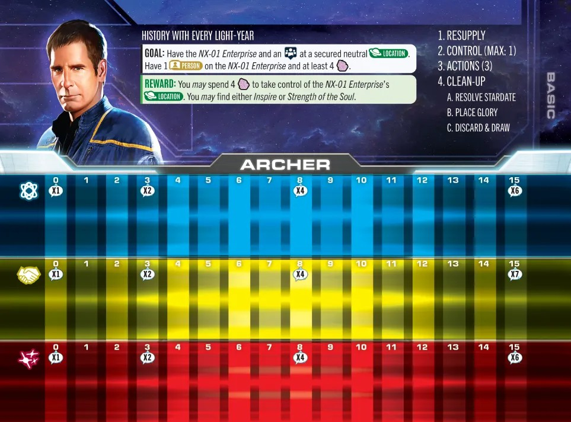
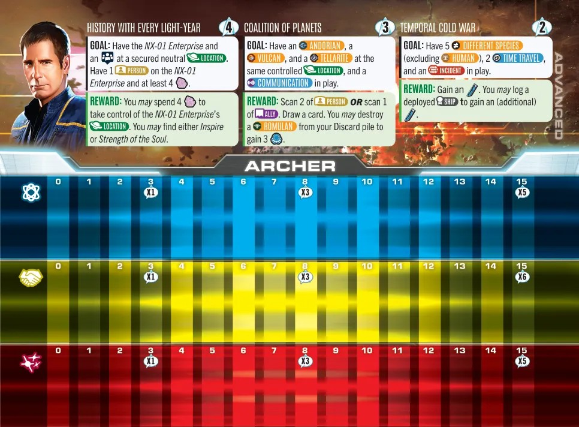
Archer’s player board’s basic side track multipliers max out at 6x for Research, 7x for Influence, and 5x for Military. As always the advanced side’s thresholds are one less. His basic mission is History With Every Light-Year, which is how Admiral Forrest impresses upon Archer that the NX-01 crew will be making history with everything they do. You’ll need the NX-01 Enterprise and an Away Team at a secured neutral location, with one Person beamed on the NX-01 Enterprise and at least four Dilithium in your possession. As a reward, you can spend four Dilithium to take control of the NX-01 Enterprise’s Location, and you can find either Inspire or Strength of the Soul. Inspire will be in your Reserve deck, so that’s usually the one I recommend finding, but obviously your circumstances will dictate that decision. And to be clear, you can’t spend Glory for this goal, you’ll need Dilithium in your supply (resources on Earth aren’t yours until you gain them via Archer’s resupply).
Archer’s Advanced side gives you four points for History With Every Light-Year in addition to the Reward. His second mission is Coalition of Planets, referencing his founding of the United Federation of Planets that we just barely get to see at the end of the series. It requires having an Andorian, Vulcan, and Tellarite at the same controlled Location and a Communication trait in play. You have an Andorian (Commander Shran) and Vulcan (Ambassador Soval) in your developments, so you’ll just need a Tellarite or Wildcard all at a controlled location for that last trait, which can be difficult (especially when mixing with the core set). If you can pull it off, your reward is three points, and a choice between scanning 2 of the Person deck or scanning 1 of the Ally deck. You can then draw a card (which can be the one you just gained if it was placed on top of your deck), and you may destroy a Romulan from your discard pile to gain three Glory. I don’t think I’ve had the opportunity to actually destroy a Romulan yet, but you could always scan and get a Romulan, then immediately destroy the gained card for two Glory. That’s a fairly minor benefit though, and any time you destroy a Romulan card you’re not likely to be gaining that many extra points. It’s really just to help speed up the endgame. And for now you can’t scan for Romulan Ally cards as none exist yet (who would even trust a Romulan Ally?
Archer’s third mission is called Temporal Cold War, driven by Agent Daniels (Kovich?) and his fight against the Suliban or the Sphere Builders, depending on the episode. It requires five different Species traits (excluding Human, though cards with Human and another Species will still count for the other species), two Time Travel traits, and an Incident in play. Your reward is two points, gaining an Action Token, and you can log a deployed ship to gain an additional Action token. This happens prior to dismissing cards, so if you log a ship with any cards that would normally be dismissed after completing the mission, you’re going to log them instead, so just be aware of the mission timing here.
↑ back to topCaptain Card & Starting Components
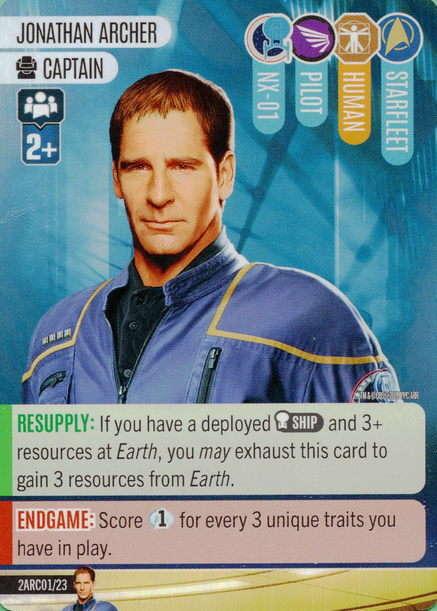
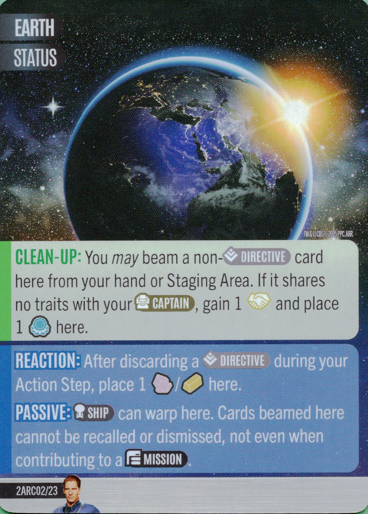
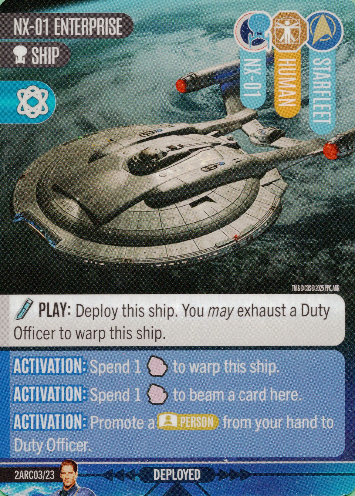
Archer has two plus (2+) away teams along with the NX-01, Pilot, Human, and Starfleet traits. The “+” there is due to both Commander Shran and Ambassador Soval, who give you more Away Teams when you enlist them from your developments (because you get access to the assistance of your allies). Archer scores at Endgame one point for every three unique traits you have in play, which means you start with points for the traits on Archer’s captain card, but you’ll have incentives for keeping as many traits as possible on the board at the end of the game. Archer’s Resupply allows you to exhaust Archer to gain three resources from Earth if you have a deployed ship at Earth and at least three resources there. I know there’s been some confusion on this card, but the intention is that you can only collect the resources if there’s a Ship on your Earth Status card, and you have at least three resources there.
As stated, Earth is Archer’s status card. At the end of each turn, its Clean-up operation allows you to beam a non-Directive card from your hand or Staging Area to Earth. If it doesn’t share any traits with your Captain, you gain an Influence and you place a Glory on the card (taken from the Stardate card as always); it counts towards the resources for Archer’s Resupply. Earth also has a Reaction that lets you place a Dilithium or Latinum on it whenever you discard a Directive during your Action Step. The Passive outlines what else you can do, mainly warping ships to Earth. It’s also worth remembering that cards beamed to Earth can never be recalled or dismissed, so once they’re here, they’re stuck here. Earth has some importance outside of just resource generation. Those traits beamed to Earth will count towards Archer’s endgame, which is helpful for scoring. You’ll also need at least four cards beamed to Earth to Enlist Admiral Forrest. Another upside is that beaming cards to Earth will keep your deck trim, but you’ll lose access to them forever, so it’s a balancing act. Finally, any resources that you send to Earth but don’t gain by the end of the game are lost. So if you’ve got Glory tokens here, you want to get them back whenever you can, sometimes more urgently than the resources.
Archer starts with the NX-01 Enterprise deployed, and it’s objectively a little worse than most starting ships (very thematic). It only has a Research skill, which is fitting because the ship leaves spacedock without much in terms of weapon systems. It has the NX-01, Human, and Starfleet traits. It also doesn’t have much of a transporter system (it’s fine for Cargo, right?) and everyone using it is a little unsure if they’ll make it back to the ship in one piece, so you’ll have to spend a Dilithium to beam cards here. When you deploy it, you can exhaust a Duty Officer to warp the ship.
Let’s talk about the NX-01 trait. Many cards in the deck have this trait, and while it’s going to come up again when we talk about the custom Directive Faith of the Heart, I wanted to give a quick overview here. NX-01 is a new trait that can be scanned for (if you had an ability to scan for “any trait”) and many of Archer’s cards in his deck have this trait. Additionally, four market Person cards (and one Rewards Crossover from Second Contact, obtainable via Krulmuth-B) have this trait. Thematically, this is meant to reflect the premiere episode of Enterprise (Broken Bow) where Archer has to assemble his crew on short notice. This means that Archer, despite having a fairly normal deck size with a slightly smaller set of Available cards, will have the opportunity to add more crew members throughout the game. There will also be some more situations where NX-01 is relevant, and I’ll be sure to highlight when it happens.
↑ back to topArcher’s Available/Discarded Cards
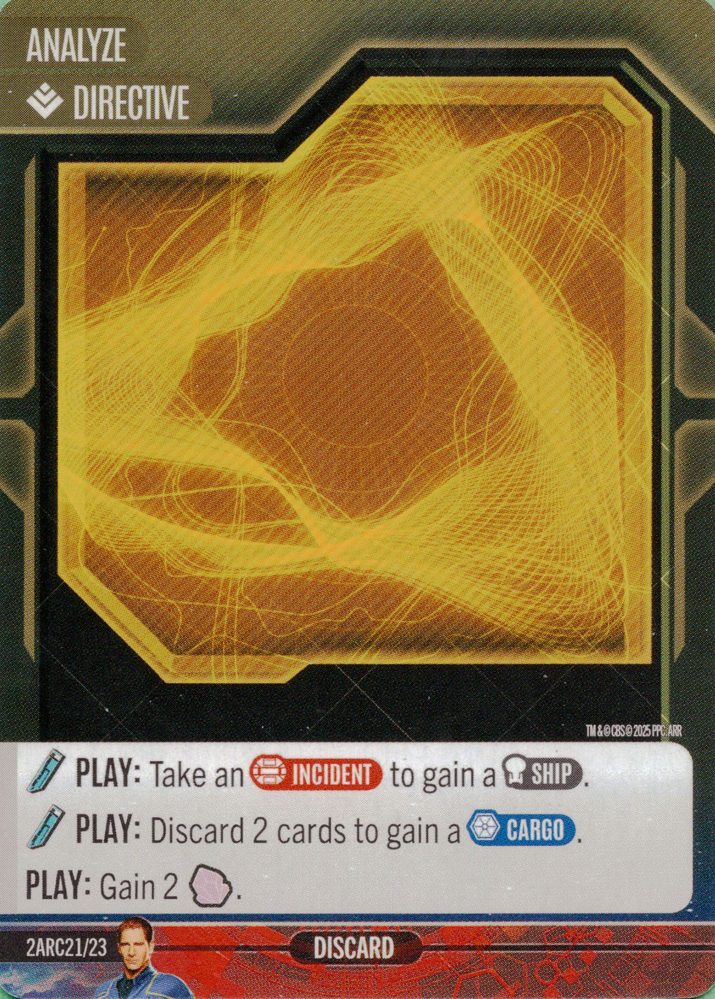
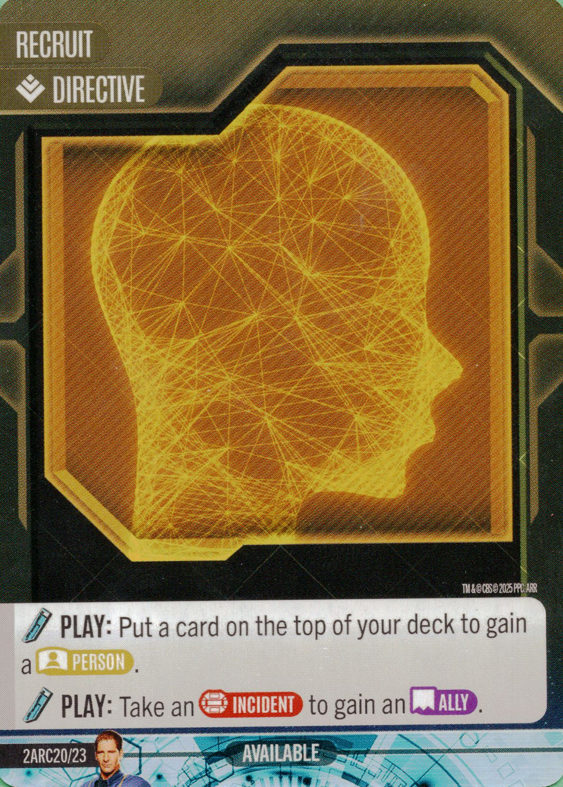
Archer only has 5 Available cards: one Person card, one Ship, and three Directives. You also have a Directive in the discard pile (Analyze). The only familiar Directive in the Available cards is Recruit. Archer gets a lot of custom directives.
↑ back to top”Trip” Tucker III (Person)
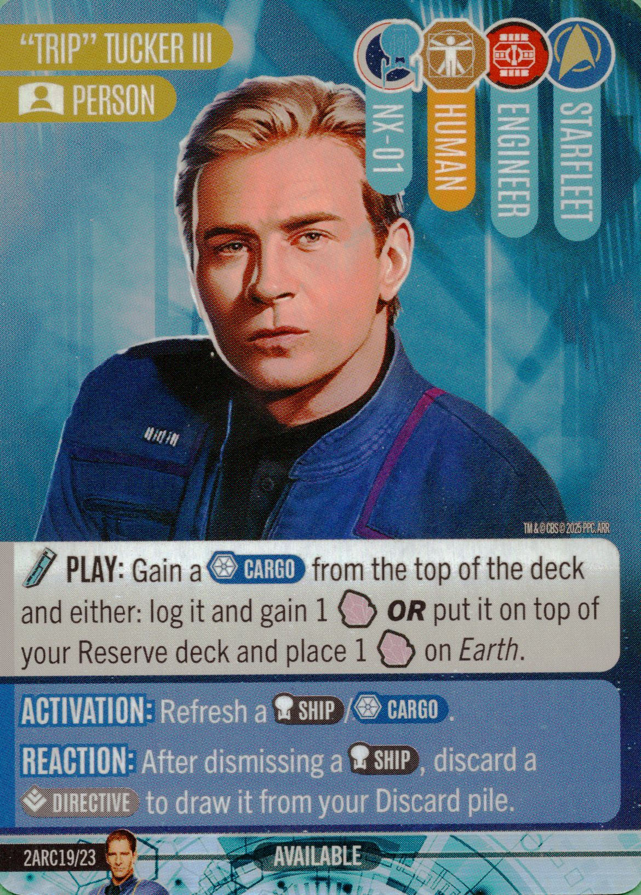
The Commander of the NX-01 Enterprise and Chief Engineer, he works tirelessly to keep the ship together through impossible circumstances. His charm and Floridian accent aside, he’s more than ready to go explore Strange New Worlds, but more often than not he’s needed to fix things on board the NX-01 Enterprise. He’ll keep the NX-01 together through Xindi attacks, work to develop weapons, nearly die many times, and repeatedly wonder whether he and T’Pol actually have a relationship. He’s also the first recorded instance in the Star Trek universe of a human being both pregnant with an alien baby, and a human male being pregnant at all (“You’re never gonna let that go, are you?)” In all seriousness, he has one of the best plotlines regarding grief and revenge after loss, and is an excellent example of the continuing the trend of impressive and competent Starfleet officers (he moves between two ships traveling at warp in a spacesuit!). We salute you, Trip Tucker. I’ll always pretend Section 31 faked your death and that Riker just believed some propaganda.
Trip has the NX-01, Human, Engineer, and Starfleet traits. His Play action allows him to gain a Cargo from the top of the Cargo deck and either log it and gain a Dilithium, or put it on top of Archer’s Reserve deck and place a Dilithium on Earth. The downside to placing it on Earth is that you’ll need a Ship there to get those resources, but if you want to actually use the Cargo, you’ll need to take that option. Why log it? Aside from the Dilithium (which you’ll need because Resources are scarce), you’ve got a Development (Founding the Federation) which you can’t enlist until you have at least five different species logged. Therefore, depending on what comes up, you may have a decent motivation either way. Trip as your Duty Officer allows you to refresh a Ship or Cargo, or as a Reaction, when you dismiss a Ship, discard a Directive to draw that ship from your Discard pile.
↑ back to topShuttlepod 1 (Ship)
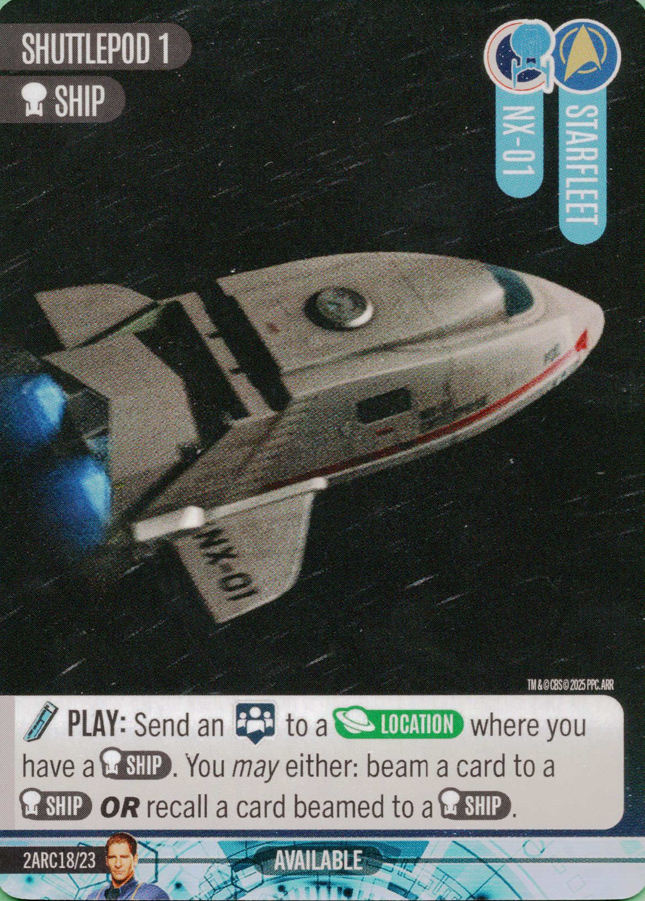
When you’re on the cutting edge of space exploration, and you’re only really comfortable with using your teleporter to transport cargo, then you use your Shuttlepods. A lot. And the crew of the NX-01 tended to use their shuttlepods for almost everything, meaning that they appeared in quite a few episodes. But the most memorable episode is when Reed and Trip were stuck alone in Shuttlepod 1 with limited air and micro-singularities punching tiny holes in the hull. As Reed writes letters to every girl he’s ever glanced at, Trip does the work and buys them just enough time to get home (Reed helps too, eventually).
Shuttlepod 1 is Archer’s undeployable beaming Ship. While it only has one play action, you’ll get to send an Away Team where you have a ship and either beam or recall a card beamed to a Ship. I have found that even with Archer’s limited Away Teams, it’s really necessary to be able to beam and recall cards to help keep Archer’s deck trim as more and more Reserve cards enter the game.
↑ back to topStrength of the Soul (Directive)
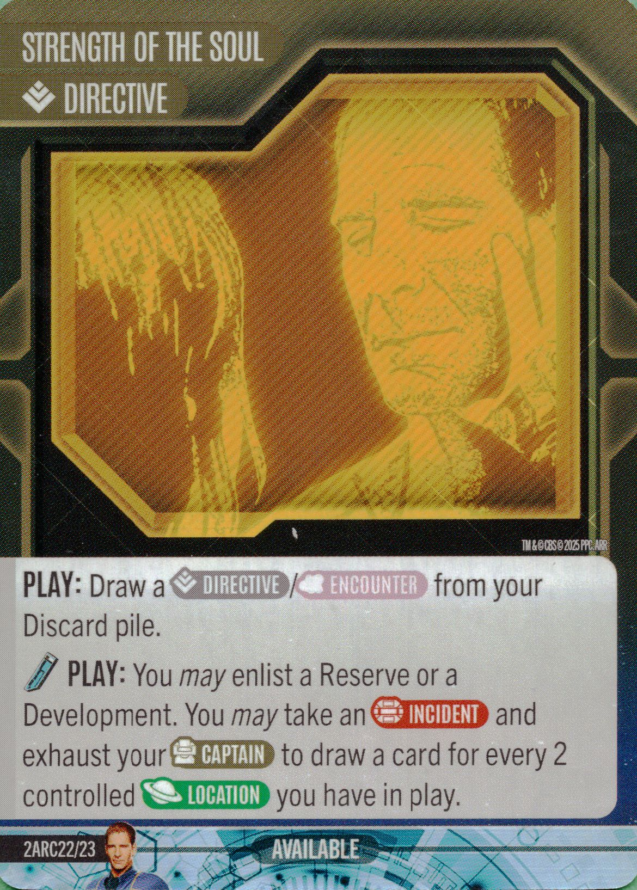
One of three custom Directives for Archer based on the Diane Warren theme song, Strength of the Soul pictures Archer in a mind-meld with T’Pau while he is the vessel for the Katra of Surak. Apparently, humans shouldn’t be able to handle that, so it’s a great example of his Strength of the Soul.
Strength of the Soul has two very different Play operations. The first is a free-Play Action that lets you draw a Directive or Encounter from your discard pile. Practically speaking, this could be Analyze (which starts in your discard pile) on turn one, but as the game goes on it has a lot of flexibility in how you might use it to grab Reach Any Star, Faith of the Heart, Founding the Federation, or your standard Directives.
The second Play Action allows you to enlist a Reserve or Development, then you may take an Incident and exhaust your Captain to draw a card for every two controlled locations you have in play (in your controlled locations area, since you can’t beam locations). We can talk about this more in starting strategies, but this card is kind of the key to Archer’s deck, especially when thinking about cards like Founding the Federation (which will let you Enlist your entire Reserve). Needless to say, this makes the approach to Archer’s deck so variable and interesting. Another interesting point here - for a captain with no Activation or Reaction operations, there sure are a lot of ways to exhaust him.
↑ back to topFaith of the Heart (Directive)
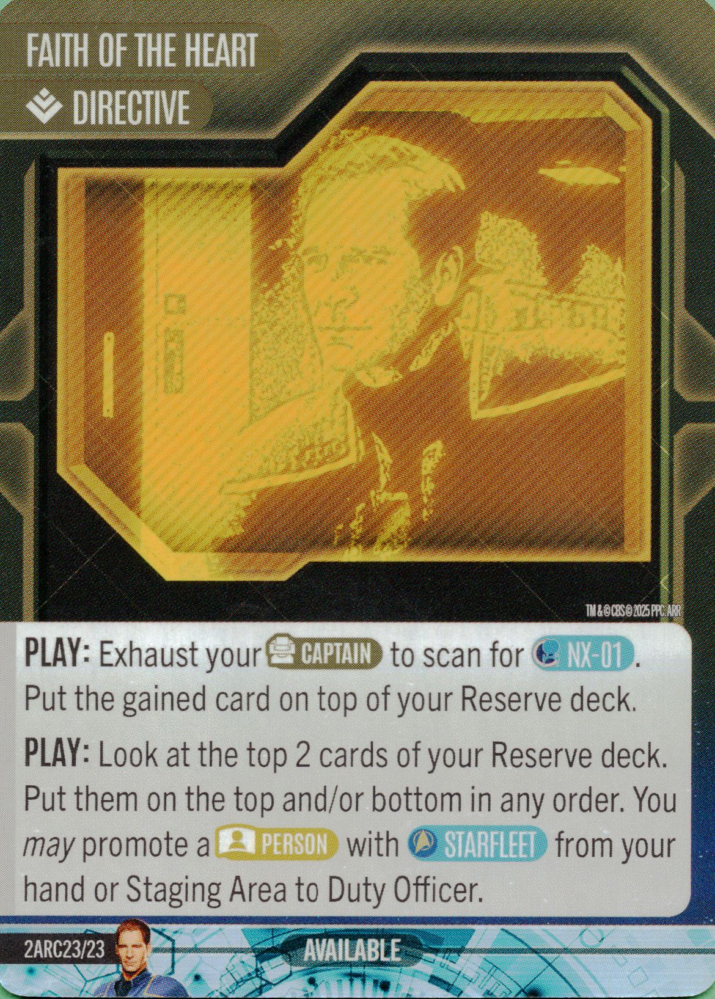
Just go listen to the theme song for Enterprise. It really grows on you… until season three, when it changes for the worse, and you kind of hate it again. And then it becomes somewhat endearing. Anyway, Archer’s got Faith of the Heart.
Two free-Play Actions on this card, the first of which allows you to exhaust Archer to scan for an NX-01 trait card, which for now is limited to the Person deck (I have no information on future NX-01 cards, if any). This is your main way to access Phlox, Hoshi, Mayweather, and Reed. When you gain them, you’ll put them on top of your Reserve deck (reforming a new Reserve deck if you don’t have one anymore).
The second free-Play Action lets you manipulate the top of the Reserve deck by looking at the top two cards and deciding which order you want to return them, or if you want them on the bottom of your reserve deck. This is super useful for manipulation of the deck if you’re desperate for a specific Reserve card. You also may promote a Starfleet card from hand or staging area to Duty Officer, which is nice so you can leave the operations on the NX-01 Enterprise unexhausted for alternative use.
↑ back to topArcher’s Starting Hand Strategies
Archer has the unique privilege of perfect knowledge of his starting hand. You know exactly what you’re working with from the start, so what can you do with it? Here’s the problem: It’s really hard to talk about this without talking about your Reserve and Development cards because of Strength of the Soul. The ability to potentially enlist a card on your very first turn is quite appealing, but you only have three development options: Ambassador Soval, Commander Shran and Automated Repair Station. They all could be appealing, but either Commander Shran or Ambassador Soval are probably the better choice because you’ll get some more Away Teams. To get Shran, you’ll need to use Trip Tucker’s Play Action to gain and log a Cargo, giving you two Dilithium, a Latinum, and a Glory to pay for Shran’s Development cost. Now you have no resources (uh-oh) but you can promote Shran to Duty Officer and use his activation to get two Dilithium back when you discard a Directive (and place a Dilithium/Latinum to Earth) and send an Away Team. It’s probably the best move in a vacuum (thanks to Dreadreaper on the Discord for pointing it out prior to the guide going live, as I had considered Shran’s cost to be out of reach initially, but it turns out he’s a decent early game Dilithium generator).
If you do grab Ambassador Soval, then you can use the remaining two Action tokens on Trip Tucker first, to gain a Cargo. If you log the cargo, you’ll have another Dilithium and could potentially warp the NX-01 Enterprise and use Shuttlepod 1, but if you don’t log the Cargo you’ll have to use Recruit as your final action (which you can still do even if you log the Cargo). From there, you have Faith of the Heart and you can either use that to gain a Person with NX-01 to your Reserves, or you can use the other free-Play Action to promote Trip to Duty Officer.
Automated Repair Station isn’t much different, you’ll just have more Dilithium to use and have the potential choice of beaming Trip to the Station to Scan 1 of the Ship deck. I don’t necessarily recommend that, but I also don’t think Trip is going to stick around in your deck for super long so it’s not the worst choice in the world either.
A slightly different version of this is using Strength of the Soul to Enlist a Reserve, which is probably only worth it if you use Faith of the Heart to look at the top two cards of your Reserve deck so you have control over what you’re getting. From there it’s a pretty similar use of your remaining two Action tokens, only that you’ll need to promote Trip, refresh the NX-01 Enterprise, and then use Shuttlepod 1 on a warped NX-01 Enterprise and then use Recruit to gain an Ally card.
What if you don’t Enlist using Strength of the Soul? Then you’ve got the ability to pull Analyze from your discard, and your five remaining cards provide a pretty straightforward set of decisions. Unless there’s something obviously awesome in the market, my go-to is to gain a Ship and potentially an Ally with Analyze/Recruit, while returning one of the Incidents you gain from those directives and promoting Trip to Duty Officer and beaming one of the Incidents to keep the deck trim, while gaining an NX-01 card to the top of your Reserve Deck. You can also focus on securing locations by warping the NX-01 Enterprise and getting an Away Team out with Shuttlepod 1. From there I’d use Analyze to get two Dilithium, and my final action to grab a Person or Ally.
Let’s talk about Faith of the Heart for a bit to wrap this up. Is it worth using Faith of the Heart to look for your crew members in the Person market? The obvious upside is that they are four fairly powerful market cards with additional points on them. The downside is that you’re increasing an already busy Reserve deck with even more cards, but Founding the Federation (Directive in your Developments) gives you an option to deal with that. I think that most of the time, when Faith of the Heart comes up, I will be using it for recruiting Archer’s crew. This is especially true when combining markets, as the likelihood of Archer’s crew coming up naturally in the market goes down with every market mixed in. I’ll talk about those four cards in the Reserve Card section of the guide, coming up next.
↑ back to topArcher’s Reserve Cards
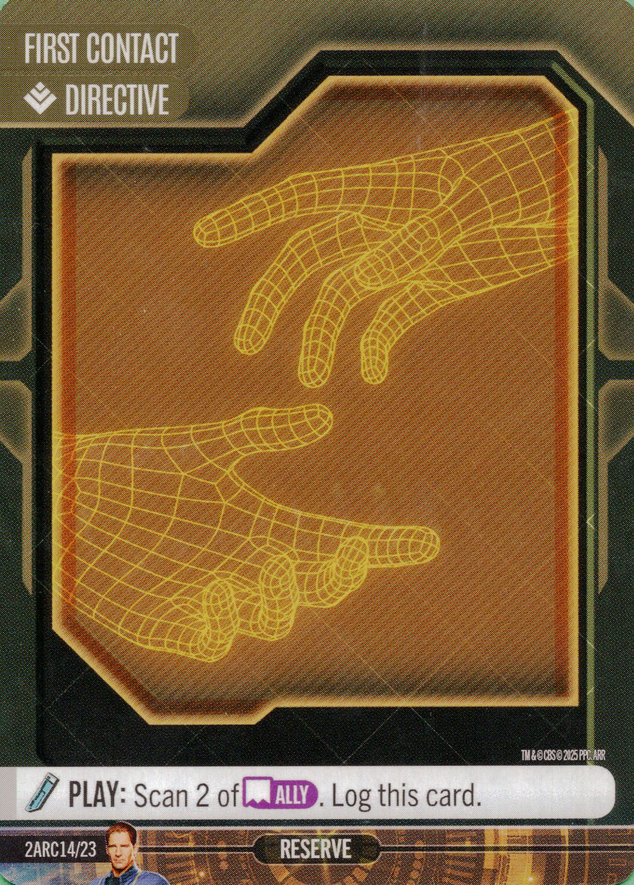
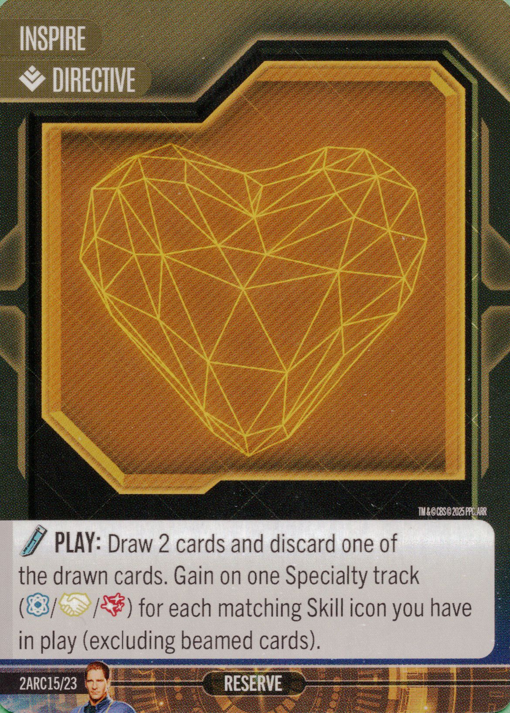
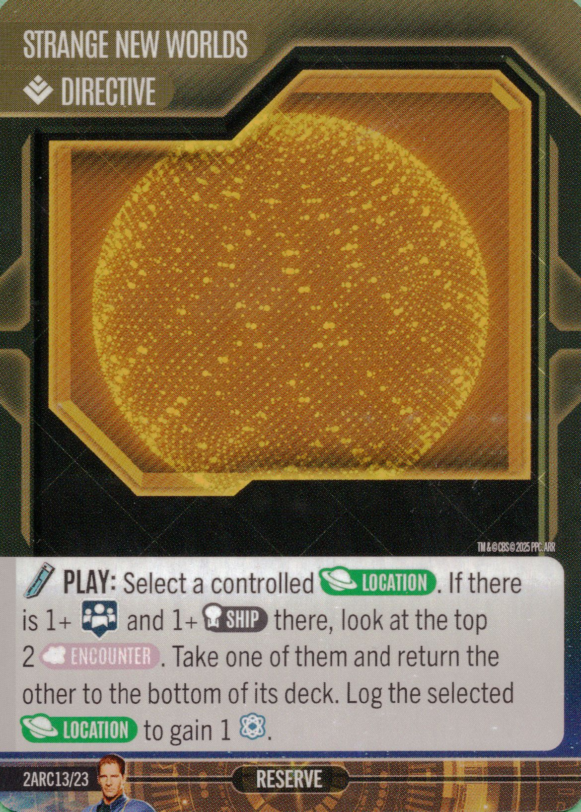
Archer has seven Reserve Cards consisting of four Directives, two Person Cards, and one (very good) Cargo (boy). Among the Directives are First Contact, Inspire, and Strange New Worlds, all of which we’ve seen in previous decks. Inspire is Archer’s primary method of advancing on his skill tracks, but doesn’t give him a Dilithium the way that Utilize does for most captains. First Contact is a one-off Directive allowing a Scan 2 of the Ally deck. And Strange New Worlds being your main way to get Encounters gives you another motivation to get through your Reserves as fast as you can. The other Reserve cards are new, and you’ll also have a chance to get the four NX-01 Person cards from the market, and those are described for the benefit of Captain Archer below:
↑ back to topReach Any Star (Directive)
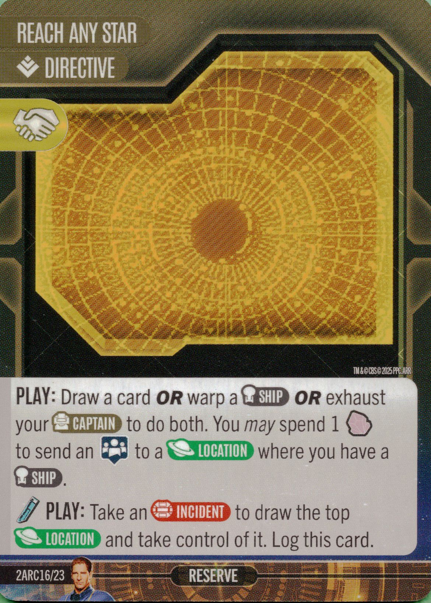
The third and final custom Directive based on lyrics to “Faith of the Heart,” it has an Influence skill which is applicable when it’s in the Staging Area after being played for its first free-Play Action. That action gives you the choice between drawing a card, warping a Ship, or exhausting your captain to do both (told you you’re going to be exhausting Archer a lot). You may also spend a Dilithium to send an Away Team to where you have a Ship. That’s a decent amount of benefits for a card with no Action Token cost, making this a pretty valuable card that you’ll want to keep around…
…Except that the second Play Action lets you take an Incident to draw the top Location and take control of it, followed by logging Reach Any Star. Which is also pretty enticing, especially when you need a planet for Strange New Worlds or simply want to risk some additional tableau benefits sight unseen (Unstable Wormhole can help here too). Reach Any Star is super versatile.
↑ back to topT’Pol (Person)
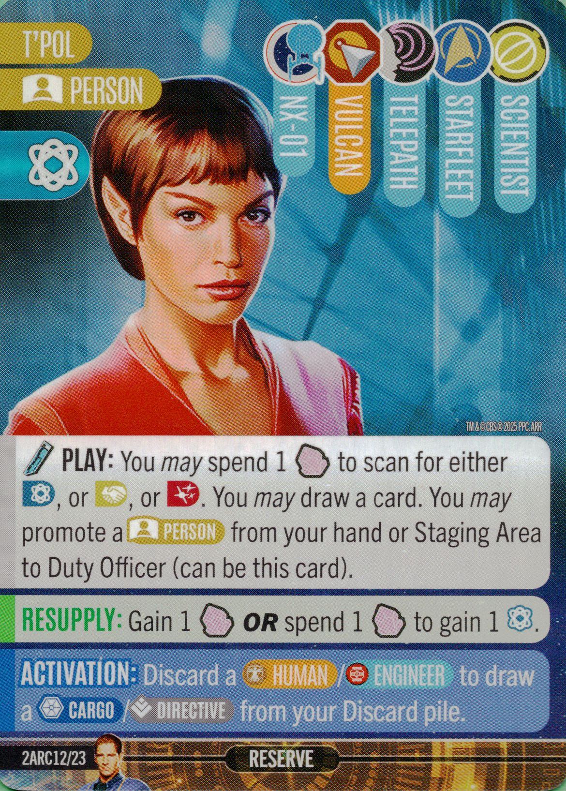
T’Pol really was the punching bag of Enterprise. Forced to share a ship with stinky Humans, she underwent forced mind-melds, Trellium-D addiction, an inexplicable attraction to Trip Tucker, meeting her future self and child, a Vulcan unrest amid continued conflict with the Andorians, an arranged marriage, a cloned half-human child, and through it all, these pesky Humans won’t stop getting themselves into trouble by having to explore everything. Through it all, she develops a loyalty to the crew of the NX-01 and Captain Archer, making her one of the most dynamic and interesting characters from this early era of the Federation.
If you’ve read my Soval guide, this card is going to be very familiar. Nearly identical even. T’Pol has a Research skill, and identical traits to Sub-Commander T’Pol (Vulcan, Telepath, Scientist, and Starfleet) while also gaining the NX-01 trait. She has an identical Resupply (gain a Dilithium or spend one to gain a Research), and an identical Activation (Discard a Human/Engineer to draw a Cargo/Directive from your discard pile). Even the bulk of her Play Action is the same, allowing you to scan for a card with a skill icon of your choice and draw a card and promote a Person from your hand or Staging Area (including T’Pol). The only difference is that Archer’s version is cheaper (one Dilithium cost) because he has less access to Dilithium, and a cost of two would be too high.
↑ back to topMajor Hayes, MACO (Person)
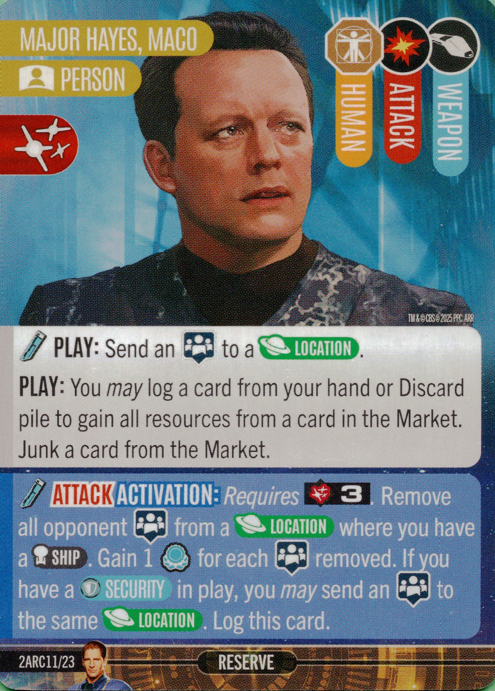
Introduced in the Season three premiere of Enterprise (The Xindi), he is the leader of the Military Assault Command Operations unit assigned to the NX-01 Enterprise during their search for the Xindi weapon in the Delphic Expanse. He butts heads with Malcolm Reed repeatedly, as Reed feels his position as Chief of Security is being undermined by Hayes tactical background. Although you might expect more conflict between the MACOs and Starfleet, they end up being a complementary unit necessary in the location and destruction of the Xindi Weapon, and they remained part of the NX-01 Enterprise’s attachment during Season four (although as you’ll note from Hayes’ Activation, he doesn’t appear in Season four). Fun bit of trivia, Hayes was played by Steven Culp and had previously appeared in a deleted scene from Star Trek Nemesis where he played Martin Madden, Riker’s replacement as First Officer on the Enterprise-E.
Major Hayes has a thematic Military skill, as well as the Human, Attack, and Weapon traits. He has the consistent benefit of allowing you to send an Away Team to a Location as a Play Action, but also has a free Play Action that lets you log a card (hand or discard) to gain all resources from a market card, then junk a card in the market. Playing against captains like Burnham, you can see how this can be an advantage to gain resources and thin your deck. Since that play action says “may,” you can also just choose to perform the second sentence (junk a card from the market) if you want him in your staging area for purposes of gaining on the military track using Inspire.
His Attack Activation requires three military skill, and lets you remove all opponent Away Teams from a Location where you have a Ship, gaining a Glory for each Away Team removed. If you have a Security in play (say, Malcolm Reed), you may send an Away Team to the same location. Unfortunately, you then log Major Hayes making this a one-time benefit. I think the opportunities for this will be obvious, and it can help speed up the end of the game. I have found this slightly more useful in games against the Bot (the Bot isn’t typically accounting for this as it stacks three or four teams on the same planet), but watch for opportunities against a human opponent who was too confident that they had secured a location.
↑ back to topPorthos (Cargo)
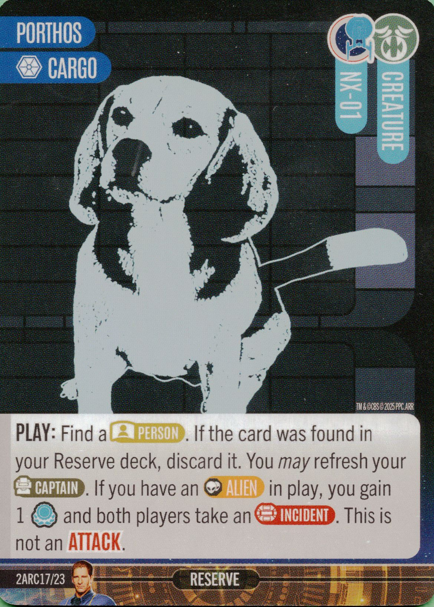
Archer’s very good boy, he’ll boldly go where no dog has gone before. He’ll warn off alien invaders, from the Suliban to the Ferengi, and he’ll survive foreign diseases to make it all the way to the end of the NX-01’s journey. Just follow Phlox’s instructions and stop giving him cheese.
Porthos has a Free play action that lets you find a Person card, including in your Reserve deck if you discard the found card. Porthos lets you refresh Captain Archer, which is great because you’ll be exhausting Archer quite a bit. If you have an Alien in play, you gain a Glory and both players take an Incident card, but this isn’t an Attack. While you have to be a little careful of taking too many Incidents with Porthos, he’s a great way to get more out of your actions that require you to exhaust Archer, and having Porthos around certainly helps Archer deal with exhaustion. I still think it was a bad idea to bring him to the Delphic Expanse.
↑ back to topHoshi Sato
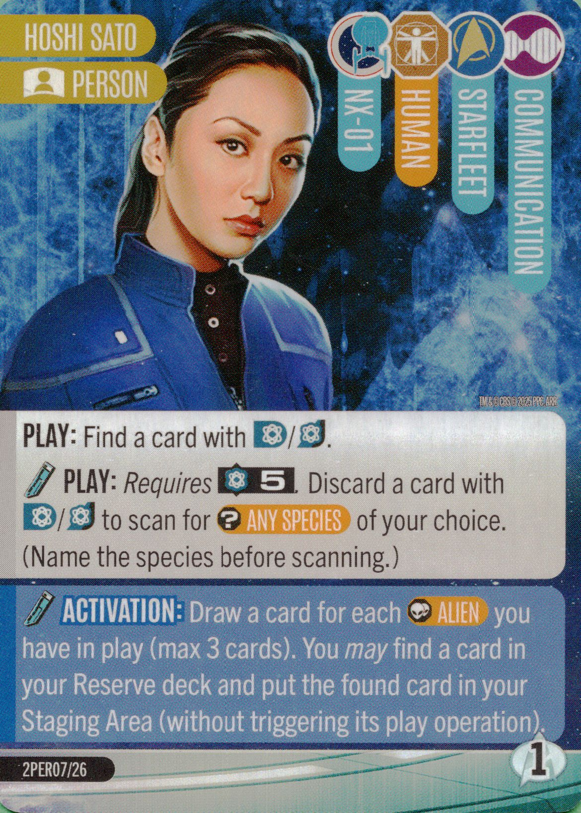
Hoshi Sato was a University Professor in Brazil when Captain Archer recruited her to join the NX-01 Enterprise as communications officer. Hoshi’s ability to translate alien languages is nothing short of magic, though the universal translator is similarly magical.
Hoshi has a free play action that lets her find a card with Research skill/focus. I’ve used that in conjunction with T’Pol in Archer’s deck, sometimes getting to fish T’Pol out of the Reserves. Her second action requires five Research and lets you pick a species to scan for when you discard a card with Research skill/focus. For Archer, the obvious use for this would be to grab an Andorian, Vulcan, or (most likely) Tellarite to complete Coalition of Planets, but you can also grab some Xindi to help you Enlist Agent Daniels or any other species you haven’t met for your Temporal Cold War and beaming to Earth goals. I’ll go so far as to say that Hoshi is almost necessary if Archer wants to get all three missions completed.
↑ back to topMalcolm Reed
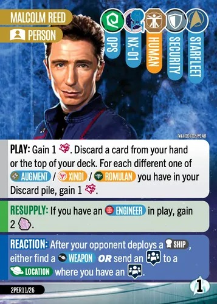
Malcolm Reed takes his job seriously (too seriously, sometimes). When he's not writing letters to all his ex-girlfriends, he’s constantly worried about the weapons capabilities of the first warp-5 Starfleet ship, and he’s working to improve combat readiness. Who knows, maybe they’ll end up naming the alert system after him (Reed Alert?).
Malcolm Reed has the Security and Ops traits, along with the obligatory Human, Starfleet, and NX-01. I love the resupply if you have Tucker in play, because it’s very thematic. The Reaction will be useful most of the game as ships are constantly coming and going, and the flexibility to send more Away Teams or find a Weapon is great. His Play Action is weaker for Archer. It gives you Military advancement of one plus one for every Augment, Xindi, or Romulan in your discard pile. Hopefully you’ve got some of those cards from the market, but having them in your discard is always a crapshoot, so I prefer to promote him to Duty Officer and leave him there. Plus, that’s the best way to benefit from Reed Alert.
↑ back to topTravis Mayweather
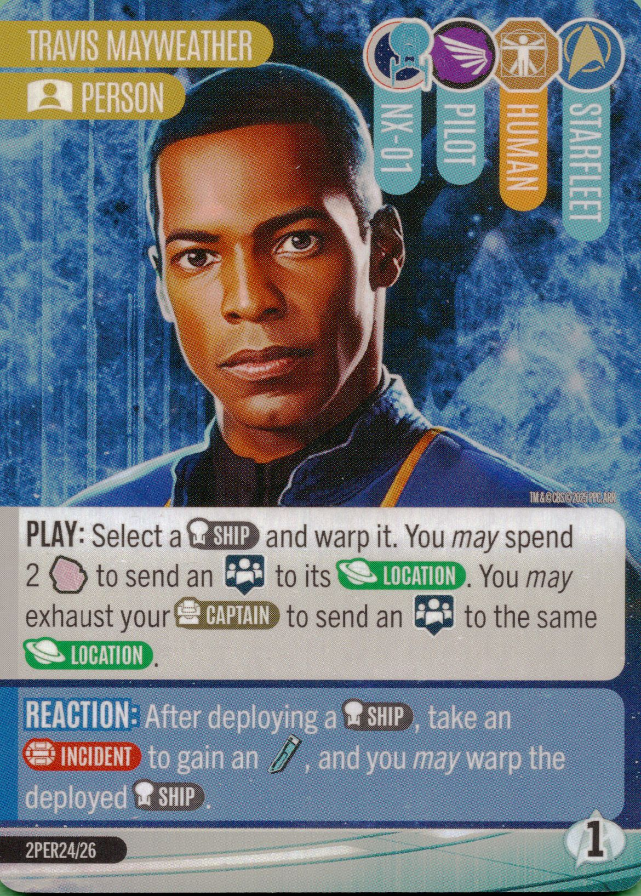
Bright-eyed ensign and helmsman of the NX-01 Enterprise, Mayweather grew up on the Horizon, a long-haul transport in the early days of human space exploration. He was the helmsman of the NX-01 Enterprise and piloted Shuttlecrafts on many, many away team missions (and he was constantly hurting himself during athletic recreation on alien planets).
Mayweather’s free play action requires you to select a Ship and warp it, then you may spend two Dilithium to send an Away Team to a Location, then you may exhaust Archer to send an Away Team to the same location. While this is generally useful for all captains, it’s slightly worse for Captain Archer because you often have to make the decision to exhaust Captain Archer during his resupply in order to gain resources from Earth. Two Dilithium is also pretty steep for Archer in ways that’s less difficult for other captains, but you do have Porthos if you want to refresh Archer and try to send both teams. The benefit comes from this being a Free Play Action, and warping a ship without paying Dilithium is really important for Archer too. His Reaction triggers after deploying a ship, and you can take an Incident to gain an Action Token and you may warp the ship you just deployed. That’s not always the best decision, but it’s certainly good enough that you can consider it if you’re in desperate need of one more Action.
↑ back to topPhlox
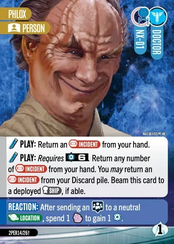
One of only two non-human crewmembers of the NX-01 Enterprise, Dr. Phlox is the smiley Denobulan physician Captain Archer retains to help return an injured Klingon and prevent a potential war. While his medicine is not quite as advanced as simple hyposprays, he has a zoo full of animals in his sickbay that he can utilize for a variety of medical remedies. He notably has three wives (one of whom is quite smitten with Trip Tucker) and definitely adds a dose of whimsy helping the Human crew of the NX-01 learn that not all alien cultures they encounter are going to think about social situations the same way they do. At the end of the day, he’s critical to helping Captain Archer manage and resolve a multitude of medical emergencies.
Dr. Phlox has two Play Actions, the first of which simply returns an Incident from your hand. The second requires six Research and allows you to return ANY number of Incidents from your hand and an additional Incident from your discard pile, and then you must beam Phlox to a deployed Ship, if able. That “if able” means that you can still play this if you have no Ships deployed. Between Phlox and Hoshi, there’s good incentives to get your Research raised pretty quickly. However, I’m not convinced that Archer is a Captain that is constantly taking Incidents. The best way to use this is to use all your abilities that require you to take incidents until you have one Action Token left, then use Phlox to return as many as you can. It’s a reason to use Travis Mayweather’s Reaction, and any other benefits where the only cost is taking an Incident.
↑ back to topArcher’s Reserve Deck Strategy
Some captains don’t have that much to discuss when considering the Reserve deck. Archer is not one of those captains.
The first thing we need to talk about is, unfortunately, one of Archer’s Developments. While I’ll discuss it in more depth further below, Archer’s custom Directive Founding the Federation allows you to Enlist your entire Reserve deck. It does more than that, and because it has the Wildcard trait you can use it for more, but you’ll need to decide early on if you’re trying to get Founding the Federation prior to enlisting all of your Reserve cards. To do this, you’ll need to use Strength of the Soul to Enlist Founding the Federation, and have five different Species logged (Human count!). That’s not a terribly hard threshold, and you can get it done pretty early, but Founding the Federation has other benefits too, like beaming Ally cards from your log to Earth and returning Incidents, so you may be sacrificing some benefits if your only goal is to get this card enlisted and played.
Point is, if you’re hoping to use Founding the Federation to enlist your Reserves, then you’re a whole lot more willing to use Faith of the Heart to scan the Person deck for Archer’s missing crew members. Having an eleven-card Reserve deck is very difficult to get through, even with methods to reduce it (using Hoshi to find T’Pol, for example). And you can also use Faith of the Heart to change the order of cards in your Reserve, giving you more flexibility regarding the next card coming out. If you’re not going to use Founding the Federation to enlist all your Reserves, then it’s a lot more critical that you focus on beaming cards to ships, Earth, and anywhere else you can stash them away. You might even consider finding ways to reduce your deck below five cards for multiple enlist turns in a row. There’s a lot of ways to take Archer, making him more complex and more interesting than some captains, even from the first turn of the game (and despite perfect knowledge of his Available cards).
The other big issue is how often to send cards from your Available and Reserve decks to Earth. My general position is that you should be trying to send cards to Earth every turn. It’s the functional equivalent of logging them, and you can’t enlist Admiral Forrest without four cards there. We will talk more about your strategy with Earth at the end of the guide, but while you’re working through the Reserves, you’re going to come across cards that make sense to send there. Reed provides the Security and Ops traits, and is still in play for purposes of Reed Alert. If you feel you’ve exhausted the usefulness of Hayes, Phlox, or Sato, you can get a trait from each of them (Weapon, Doctor, and Communication, respectively). The reality is that if you let all your Reserves enter your deck, without them getting removed somehow, you’re going to fall behind and never see your Developments without having to spend Action tokens via Strength of the Soul.
Now, let’s talk about what you actually want to get out of your Reserves. Let’s remember that anytime you use Faith of the Heart, you’ll put gained cards on the top of your reserve deck. That means that you’ll be constantly getting those crewmembers out of your Reserves, if you’re also using Faith of the Heart consistently. That means you’ll hopefully get Hoshi relatively quickly, and can use her to find T’Pol (I’ve mentioned this a few times). After that I’d say the next best hope would be Mayweather, then Reed and finally Phlox, just because Archer doesn’t really need early Incident management.
After that the order is completely random, as always, but I have some things I’m at least hoping for (and can try to manipulate thanks to the second free Play Action on Faith of the Heart). I think any Archer game where Inspire comes out first is a good sign. Not only do you get some card draw, but so many of your Reserve crew have specialty restrictions, and it’s good to be able to capitalize on your skills gained earlier. Reach Any Star and First Contact are also super helpful, especially since you can log both of them meaning you’re not adding too many more deck cards as you enlist and cycle. Obviously you’d like to get Strange New Worlds at some point to start gaining some encounters, and though I’m not convinced that Archer’s game is completely reliant on Encounters to succeed, you don’t want to ignore the opportunity either. Finally, don’t sleep on Porthos (literally or figuratively). The ability to refresh Archer will give you so much more you can do, between extra enlisting, scanning for more crew, or using Mayweather, all in addition to gaining those resources from Earth. Final thoughts: don’t let the seven Reserve cards and four additional market Reserves scare you. Archer’s going to have a deck learning curve, but if you can manage your deck appropriately, and take some risks to lose cards that aren’t essential in the moment, you’ll be able to enlist everything, whether you use Founding the Federation to do it or just cycle your deck like crazy the old-fashioned way.
↑ back to topArcher’s Development Cards
Archer has seven Development cards, including four Persons, one Directive, one Ally, and one Location.
↑ back to topAdmiral Forrest (Person) (Dev Cost Have 4+ Cards beamed to Earth)
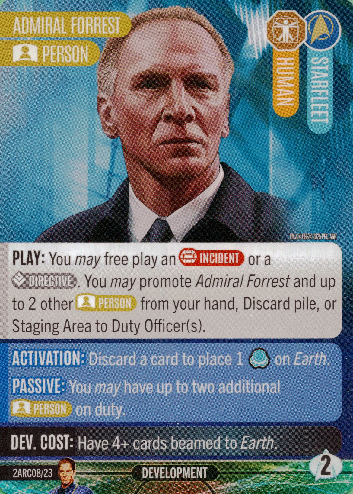
I dare you to find a more upstanding Starfleet Admiral in the history of the Federation. Forrest supervised Archer and the NX-01’s journey, from the Broken Bow incident to the Xindi attack on Earth. He urged caution where necessary, and let Archer cook the rest of the time. Sure, he’s got a mirror universe counterpart out there somewhere, but in this universe? He’s the furthest thing from a “badmiral”.
Starting with the obvious, it’s going to take at least four turns (or a very weird Founding the Federation play) to Enlist Admiral Forrest. You can only beam one card to Earth a turn, and that means the soonest you could Enlist is the end of turn four, most likely turn five. And in my gameplay with Archer, I don’t always beam a card to Earth, so Forrest is often one of my last developed cards. He’s pretty powerful, with a free play action allowing you to free play an Incident or Directive, then you may promote him and up to two other Persons from your Hand, Discard, or Staging Area to Duty Officer. Once on duty, his Activation lets you discard a card to place a Glory on Earth (which you’ll be able to claim during your Resupply). Forrest is pretty powerful if used at the right time, and considering he doesn’t cost an action token. Thankfully, you’ll be halfway or so through the game before you can get him so he’s not too powerful. He scores two points.
↑ back to topAgent Daniels (Person) (Dev Cost 3 Dilithium and have 2+ Xindi in play)
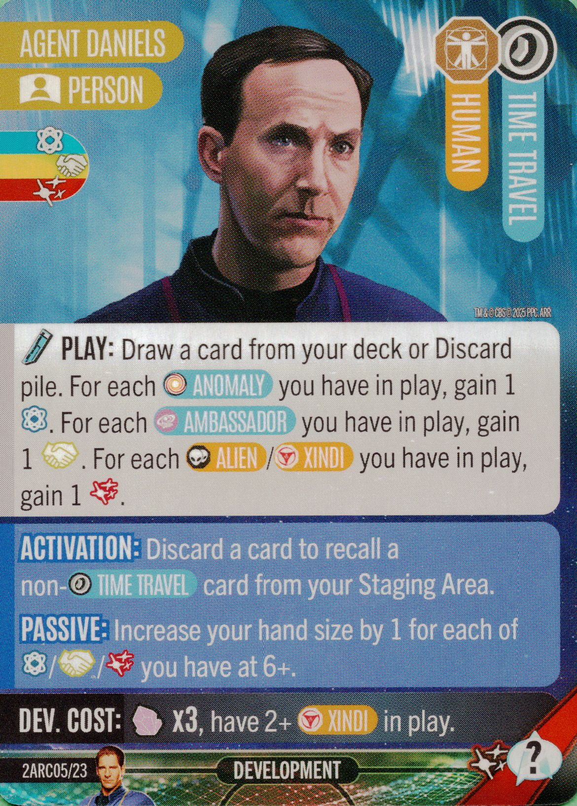
Where is Crewman Daniels when you need him? Originally introduced as crewman Daniels, he brought Archer his scrambled eggs soft every morning, until one morning he revealed himself to be a future agent of the Federation engaged in a temporal cold war. He died at least three times, and just kept coming back to annoy Archer (and eventually Michael Burnham).
Agent Daniels has the Human (though he states he’s only “more or less” human) and Time Travel traits, along with a wild skill. His main play action is very similar to Dr. Kovich (link for comparison), only Daniels lets you draw a card from your deck or discard pile. Then you gain Research, Influence, and Military for specific traits you have in play. I like how you now score military for Xindi traits as well, since his storyline focused on the Xindi. His Passive is also similar to Kovich, allowing you to increase your hand size for each specialty track you have at six or greater (versus Kovich’s five). You also get a fun Time Travel Activation, allowing you to discard a card to recall a non-Time Travel card from your Staging Area. I think Daniels more than Kovich is critical in that Duty Officer spot, but having two Xindi in play isn’t necessarily that easy (four market cards and two Locations possible). He’s a great card, especially if you need some track movement you’re not getting from other cards or simply as a great Duty Officer. He scores for military focus, which is so thematic as he is far more militant as compared to the Research focused Kovich.
↑ back to topAmbassador Soval (Person) (Dev Cost 3 Dilithium and exhaust your Captain
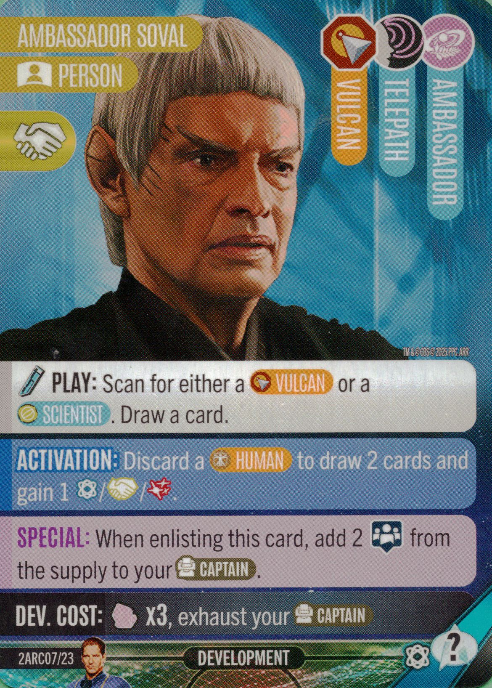
Soval and Archer aren’t exactly friends. In fact you could say he’s one of Archer’s greatest antagonists, acting as the mouthpiece for Vulcan oversight over human space exploration. He constantly argues that Humans are pushing themselves too far, that they’re as erratic as Andorians and as quarrelsome as Tellarites. But maybe Soval just hasn’t figured Humans out yet. After all, they’re the ones who proved the Vulcan Science Directorate was wrong about Time Travel.
Ambassador Soval has an Influence skill with the Vulcan, Telepath, and Ambassador traits (just like the captain of the same name). His play action lets you scan for a Vulcan or Scientist card, then draw a card, which I usually use to gain a Vulcan ship (if I know it’s still in the market) or sometimes, if I’m feeling risky, I try to get Degra with that Scientist trait scan in the common market (there’s only two in To Boldly Go, but it gets busy once you start combining markets). His Activation mirrors the Soval Captain Activation, allowing you to discard a Human to draw two cards and gain on one specialty track of your choice. But most importantly, developing Soval will give you an additional two Away Teams, representing your growing resources as you expand the Federation. I think Soval’s a reasonable choice for an early game Development via Strength of the Soul (see Starting Strategies above) and he’s a pretty good choice as Duty Officer. Archer has a deep bench when it comes to useful Person cards, and Soval is no exception. He scores for Research focus.
↑ back to topCommander Shran (Person) (Dev Cost 2 Dilithium and 2 Latinum)
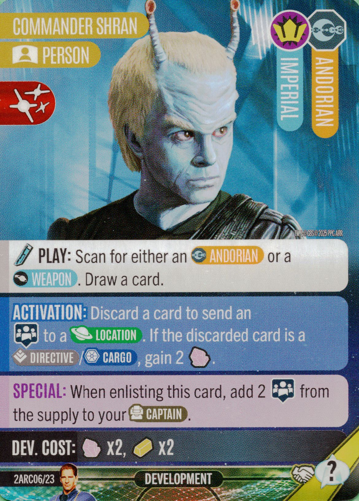
Archer first encountered Shran at the Vulcan Sanctuary on P’Jem, where he had taken a group of Vulcan monks hostage, presuming that there was a spy station on the planet. Turns out, he was right, and the Vulcans were spying on the Andorians. Archer’s willingness to not automatically take the Vulcan’s side earned him respect from Shran, who came to Archer’s aid (and backstabbed him a bit) while searching for the Xindi weapon. They also worked together to counter a rising Romulan threat to the Alpha Quadrant in the form of the holographic drone ship. It turns out that Archer owes him more than one favor.
Commander Shran has a Military skill along with the Andorian and Imperial traits. He provides two more Away Teams when you enlist him, just like Ambassador Soval. Shran’s Play Action lets you scan for an Andorian or a Weapon and draw a card. This is really more about what you think you might benefit from in terms of traits or play text, but there are three Andorian Person cards between To Boldly Go and Second Contact so there’s a good range of possibilities here. His Activation lets you discard a card to send an Away Team to a location, and if you discarded a Directive or Cargo you gain two Dilithium. I really love the thematic tie-ins with Shran’s deck, from the focus on weapons and cargo to gaining Dilithium. He scores for Influence focus.
↑ back to topFounding the Federation (Directive) (Dev Cost 1 Dilithium, 1 Latinum, and have 5 Different Species logged)
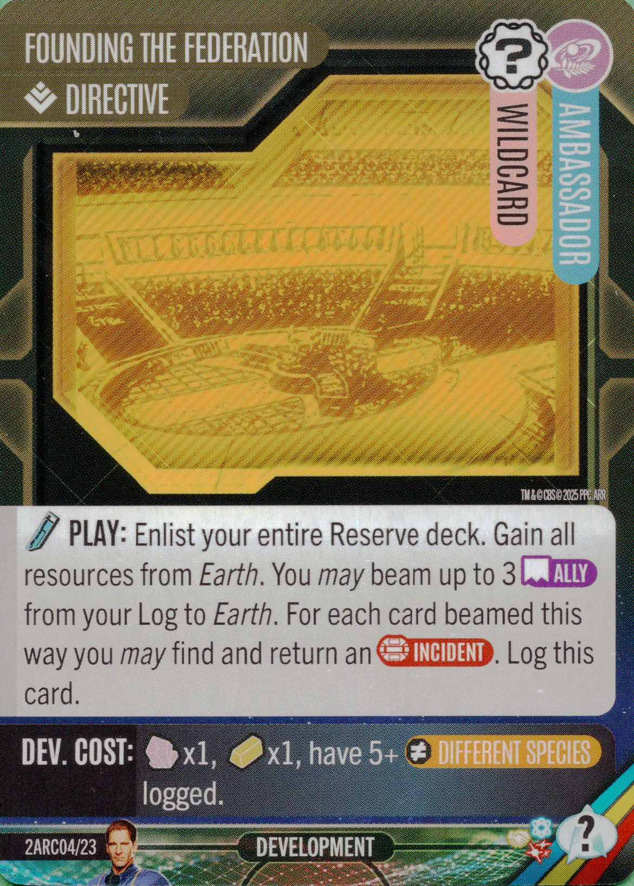
Archer gets to see the moment he acts as the Founder of the Federation twice. The first was years prior, when Agent Daniels teleports him to that moment in time in order to try to convince him not to sacrifice himself trying to destroy the Xindi weapon. Archer has trouble believing in this future, but he does survive to that moment, which will be recorded and celebrated in holodeck recreations for centuries.
Founding the Federation has the Wildcard and Ambassador traits. If you develop it simply for that reason, you’ll get some benefits out of it, especially when trying to complete your second and third missions. Beyond that, the Play Action allows you to enlist your entire Reserve deck, gain all resources from Earth, and beam up to three Ally cards from your log to Earth (to benefit from their traits at endgame), and you may find and return an Incident for each Ally beamed.
To even get this card developed, you’ll need five different Species traits logged. The card itself is suggesting you do that with Ally cards, which makes sense from a mechanical perspective. Many Ally cards self-log after you play them, so it’s hard to get a benefit from them and get them beamed to Earth (because they’re no longer in the Staging Area). Since Founding the Federation needs five species traits to be enlisted, at least a few of those could be Ally cards. Once you get this enlisted, the real question is when to use it. If you’ve got the Incidents in your deck, and you have the Ally cards in your log, and you have a relatively thick Reserve deck still, I think there’s almost no downside to just using it right away. Sure, you won’t benefit from that Wildcard trait for very long, but having access to all your Reserves (and Developments going forward) is really valuable, especially if the game is winding down. Alternatively, if you have little to no Reserve cards, or are just about to complete a mission, it might be worth waiting to use and log it. It scores for a Wild focus, which means you can use it as whichever track you’d like (your best scoring one, obviously).
↑ back to topXindi Council (Ally) (Dev Cost: Have an Incident and an Encounter in play)
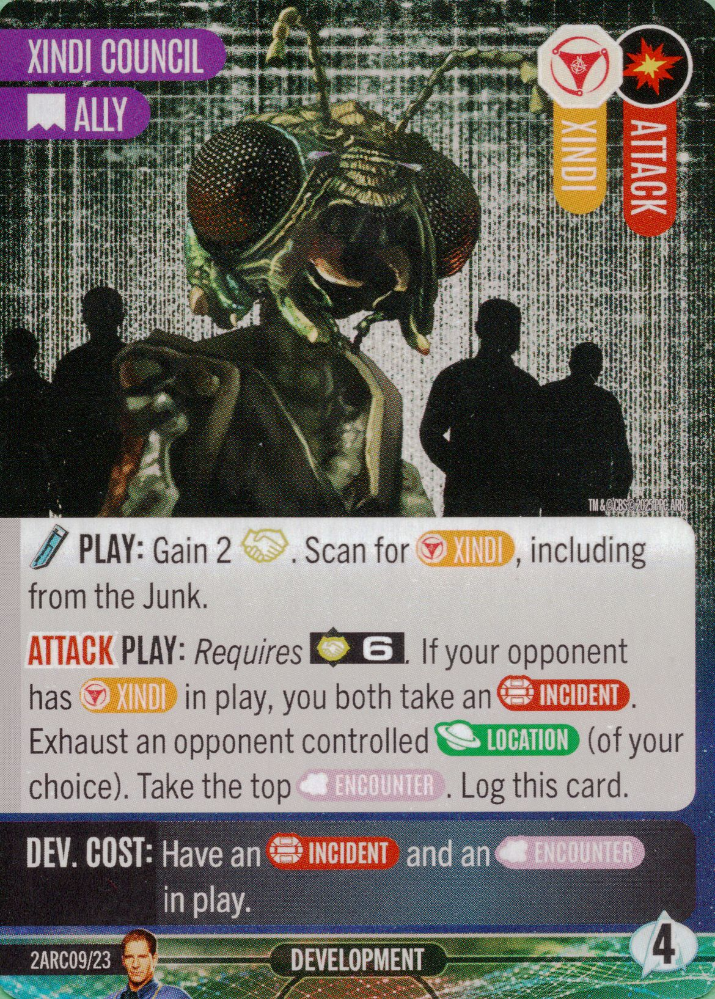
If you haven’t seen Enterprise and you’ve just been reading my thematic entries on each card, you might be a bit surprised at this one. After all, wasn’t Archer fighting against the Xindi in Enterprise Season 3? Yes, but it’s a bit more complicated than that, and I love how Archer was able to convince most of the council to become an Ally of the Federation instead of an enemy. Turns out, they were being manipulated the whole time by the Sphere Builders. But some good diplomacy and willingness to forgive mistakes helps prevent the greater destruction of Earth. My one frustration with this card is the appearance of four humanoid-looking individuals in the background, which is fine for the Xindi Arboreals and Primates but the Aquatics and Reptilians are definitely not being represented, unlike the Xindi Insectoids in the foreground.
The Xindi Council has a Play Action that gives you two Influence and allows you to Scan for a card with the Xindi trait, including from the Junk. This is super helpful for getting the cards you need to Enlist Agent Daniels. The second action is a free Play Action and requires six Influence. If your opponent has a Xindi in play, you both take an Incident, thematically representing the discord among the council. You get to exhaust an opponent’s controlled location (pointless in solo mode but interesting in multiplayer), and take the top Encounter. Then the Council logs because that would be crazy to use multiple times. You’ll need to already have an Encounter at this point, and have it in play along with an Incident, so keep that in mind if you want to try to get this card Enlisted relatively early in the game. I tend to use it once for the first action just to gain some Influence and a Xindi card, try to get Daniels Enlisted, then log this for the Encounter. The Xindi Council scores four points.
↑ back to topAutomated Repair Station (Location) (No Dev Cost
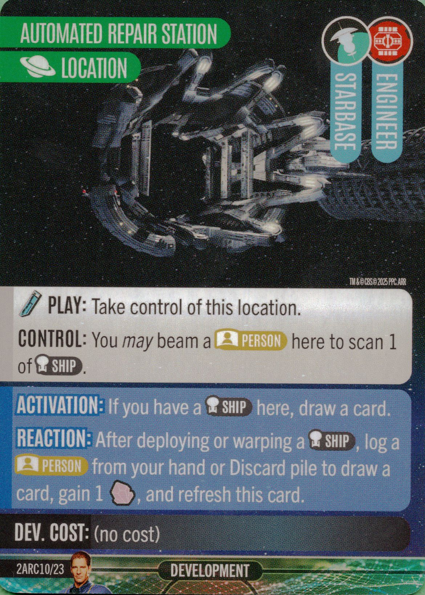
After the NX-01 Enterprise was badly damaged by a Romulan mine, they were told about an Automated Repair Station by a Tellarite Captain. Limping to the Station, they were able to trade materials for repairs to the Ship, its systems, even Malcolm Reed’s leg, all in record time. The only problem was that the Station wanted to enact a far higher cost: Travis Mayweather. Creating a clone of Mayweather, it tried to trick the crew of the NX-01 into thinking Mayweather had died in an accident, storing the real Mayweather inside the station. Archer and T’Pol managed to break in, where they found dozens of decaying bodies, feeding the Station. They fired some torpedoes and got out of there, without knowing that the station was repairing itself. This would be a good plotline to revisit, in my opinion.
The Automated Repair Station has the Starbase and Engineer traits, and costs an Action token to Control. Upon doing so, you can trade (beam) a lowly crewmember (Person card) to scan one of the Ship deck. Seems like a reasonable trade for purposes of the game (not in real life of course, that would be psycho). The Activation lets you draw a card if you have a Ship at this Location. The Reaction triggers after you deploy or warp a Ship, allowing you to log a Person from your hand or discard pile to gain a Dilithium and Refresh the Automated Repair Station.
I’m going to suggest that the Automated Repair Station is a trap. Not a terrible trap, certainly there’s usefulness in being able to gain a Dilithium if you really need it. And if you’re focusing on thinning your deck and you just don’t need all your Person cards, that can be beneficial too. But logging a Person for a Dilithium, when Archer’s Person cards are so good, can be… foolish. This is one of those Reactions that you’ll use sparingly, when you absolutely need to. Because you could easily decide to log all the Person cards in your discard pile in a single turn of warping, but keep in mind that warping usually costs one Dilithium already. Have you really even gained anything? A thin deck is nice, certainly, but you need to be able to do more than just log all your Persons.
↑ back to topArcher’s Development Strategy
Archer’s Development trajectory is about as chaotic as his Reserve Strategy. We’ve already discussed the fact that you can enlist the Automated Repair Station, Commander Shran, or Ambassador Soval on turn one if you feel like you need to do so, but should you? It really depends on what kind of game you want to have. I really like that you can get an early ship with Automated Repair Station, and Archer needs ships, especially if he has no Away Teams. Soval’s pretty expensive as an early Development. The real issue with the Repair Station is that it will beam a Person that you can’t get back unless it contributed to a mission (or you have some other way to recall a card beamed to a location). You should also consider that you only get the card draw from the Activation when you have a ship present at the Automated Repair Station, but as I pointed out above, if you have the self control to use the Activation and not the Reaction, it can be a great way to keep those cards coming. As for Shran and Soval, they both have their benefits but they can leave you light on resources. If you know your opposing captain isn’t going to be dismissing your Duty Officers early, Shran’s a great choice since he pays for himself with his Activation and gives you way more Neutral Zone or Strange New Worlds flexibility with his Away Teams.
I think that the second you can enlist Founding the Federation, you should do so. It’s the key to avoiding going through a seven to eleven card Reserve, which you won’t get through easily without Founding the Federation. You’ll need to be intentional to log cards with different Species traits, and maybe focus earlier in the game on using Recruit to gain Ally cards early on. Then you can log those Ally cards and you’re off to the races. Or collegiate lacrosse matches, as Archer is fond of watching.
Let’s talk about Shran and Sova as later game options. Both give you two away teams, which is pretty great for Archer and can really turn around his game in the Neutral Zone. The problem is that you have so many things you need and a limited amount of time to do it all. Do you really need both of them? Probably not, unless you’re trying to use them both in your Coalition of Planets mission, or in order to get more Andorian and Vulcan cards from the market. But they’re decent Developments. I’d recommend getting at least one of them early via Strength of the Soul, and potentially waiting on the other. Which one you choose will have to be based on your needs in the game.
It’s going to be tough to get the Xindi Council unless you get lucky and fish Strange New Worlds out of your Reserve deck early in the game. If you do happen to have that opportunity, I like getting them early and using them to grab both Xindi ships (if you can) from the Ship deck, then going back and getting Kemocite from the Cargo. I know that Encounter is tempting, but those three cards really help with the rest of your game, and it’s worth the detour. If you can keep your deck thin, you’ll be playing Xindi Council a lot once you have it.
Admiral Forrest has the issue of being limited to at least turn four before you can enlist him (and realistically turn five), and Daniels needs some Xindi hanging around. There are those two Xindi Locations (Denali Depot and Azati Prime) that are both good for Archer in multiple ways, so if those come up I think they’re worth fighting for (especially Azati Prime). Otherwise, maybe use Founding the Federation with Xindi Council to make sure you can Develop Daniels.
When you do finally use Founding the Federation, you’re going to have a deck thick with good cards, but remember to continue logging and beaming things you don’t need. Having a Ship that is only for beaming cards is especially good for Archer, so that he can have lots of traits in play for his endgame scoring. Be sure to keep that in mind as you juggle all the priorities Archer has to balance.
↑ back to topNotable Market Cards
Welcome to a purely hypothetical discussion of Jonathan Archer and the common market. As always, I appreciate everyone sharing any really interesting combos you’ve found in the market in the comments on BGG or the Discord (in the Archer conversation). Cards found in both the core box and To Boldly Go are discussed in the section for To Boldly Go. As an overall reminder, T’Pol can scan for Skills, so if you have a specific card you want with a Skill, she can often get it for you (depending on how well you’re tracking the market). This is a huge advantage for Archer (and Soval) but I’m not going to repeat it in every section.
↑ back to topPerson Deck
To Boldly Go: First and most obviously, a quick reminder that Archer benefits from his own crew members that you can scan for using Faith of the Heart.
I would suggest some caution in grabbing Admiral Jarok only because you already have a good method of enlisting Developments, and you don’t want to be prohibited from playing Attack cards when he’s on duty.
Gral is key for your Coalition of Planets mission, can find several cards in your deck when needed, and helps with Incident management, especially when you return Incidents using Founding the Federation (though you can still only use the Reaction one time because it exhausts).
Ash Tyler can be helpful because Archer will have quite a bit of Glory if used correctly, but you’ll never have more Klingon than Starfleet traits in play with Archer.
You can scan for Tysess, Thelev, and Va’al Trask using Shran, and Archer can use all of them with varying degrees of effectiveness.
Degra is not only thematic, provides a Xindi trait, but helps you find other Xindi cards like Kemocite, and should be able to get you an Encounter before the game ends.
Harry Mudd’s about as useful for Archer as everybody else, but I like having his traits beamed to Earth for the missions and the end of the game.
I don’t think Jackabogis that useful because you need your ships for the Neutral Zone, not Jackabog’s Encounter-taking action.
Archer has the Person cards to benefit from Landru, so he’s worth considering if you have time to gain the Location. I like Lursa for Archer because he needs Ships, and she’s good at getting ships and sending Away Teams.
Malik can be interesting for Archer, but I mostly like him for his Reaction that lets you gain Action tokens, not necessarily for gaining a Development.
Petra Aberdeen isn’t anything special for Archer unless he really needs something in the junk.
I really like Rillak for her traits more than her Incident management (you have ways of dealing with that already), but her Reaction combined with Inspire is great. Riva is fine, but mostly just for scoring and deck management.
I don’t think you’ll have enough Latinum to make Rom worth it.
Sarina Douglas is great for everyone for her skills alone, and Archer is no exception.
If you’ve been logging a lot of cards to keep the deck thin, Soji Asha can be a great duty officer for card draw purposes and Archer’s a decent captain to take advantage of that.
Sukal and Talok are nothing special for Archer, but remain good cards to have.
Tevrin Krit is fine but has the Tellarite traits, which comes in handy.
Finally, Vice Admiral Pasalk is a fine card for any Starfleet Captain, even if there’s not that much unique benefit for Archer.
Second Contact:
D’Erika Tendi, and most Orion cards, just care about other Orions, so Archer doesn’t have an inherent advantage there. Just note that her reaction is more helpful if you get more Away Teams.
Jennifer Sh’reyan is another Andorian, and considering how the NX-01 is bad at beaming and warping, she’s a helpful addition to the crew.
K’Ranch is only really useful if you’re rushing to get Founding the Federation completed, otherwise you’re thinning your deck for minimal purpose and rushing the endgame via his Glory gain.
Ma’ah isn’t terrible for Archer but he’s far more useful when he’s around other Klingons and Archer won’t be seeking them out.
Parmen is always great and gives Archer a consistent way to gain some Latinum, and his Reaction is great for free playing cards.
Core Set:
Admiral Necheyev is my go-to card for repeated use of Directives, which means for Archer she’ll be copying Strange New Worlds and Inspire most of the time, though he has so many Directives that occasionally you might have use for all of them (Reach Any Star, likely).
Admiral Pressman is a solid card despite the fact that you probably use him primarily to free play Attack cards, and not for his table operations.
Ambassador Kamarag is only going to benefit you if you’ve found a way to reliably get your Dilithium, in which case he’s a good option for card gain. I don’t think Archer needs him as Duty Officer because you have plenty of Incident management.
B-4 is a great Archer card, but mostly for his Duty Officer Attack Activation. You need Dilithium but have a superior logging capacity, making this a great card to have on duty.
Bruce Maddox is really only beneficial if you’ve gotten other Synthetics or Androids, which Archer doesn’t otherwise have.
Captain Dorg is completely circumstantial, except for the Reaction that gives you more Actions, which everyone can benefit from.
Joret Dal provides a nice hand size boost, but so does Daniels. He’s really more helpful for keeping your deck trim and gaining a Glory, so I’d say he’s solidly situational. Spy and Cardassian aren’t the most common traits so that’s another reason to grab him.
Laas is a card I really like on duty, but I find myself not necessarily using him a ton for his play action because duplicating market cards can sometimes have weirdly underwhelming results. That said, I’d never avoid him for Archer, or anybody.
Laris is another card that needs an Android around to be of full benefit for her play action, but her Activation is amazing for Archer as long as he has the resources to be refreshing what he needs.
Lenara Kahn is a decent Archer card, both because she’ll score well, provide a Trill trait potentially for endgame scoring, and she provides a relatively inexpensive way to move up Research while also gaining Anomaly cards (likely from the Cargo deck).
Lwaxana Troi is great for Archer because you need to be refreshing him after exhausting him during your Resupply.
Mirok won’t work unless you have a card with cloak. And you’re not so cargo focused that the Reaction makes sense. However, he scores well for Research focus.
Moriarty is most useful to Archer in a multiplayer game, and is otherwise not amazing but can be situationally great if you’ve managed to get a lot of Synthetic cards. Scanning for Hologram or Engineer isn’t a bad option for Archer either.
Peanut Hamper is a great card for Archer because you need Dilithium badly.
Sakonna actually can work well for Archer, especially if you’ve gotten the Xindi-Reptilian Battleship and you have a lot of weapons out and about.
Zephram (Zefram) Cochrane is always great for card draw, and Archer’s deck is so small to start that an early Cochrane can be really good for your cycle-game. His Encounter is achievable but Dilithium is scarce.
↑ back to topCargo Deck
To Boldly Go:
Borg Spatial Trajector should be usable by Archer, both from a Research specialty restriction and having the Person cards needed to make good use of it, especially endgame when it helps to get more traits onto Ships for Archer’s scoring.
Cloaking Device is also helpful unless you have limited Away Teams because you didn’t enlist Shran or Soval.
I like Computer Virus for everybody, with no special benefit for Archer.
Archer has the Person cards to use EVA Suits optimally, but he may lack the Away Teams early in the game.
Forced Singularity might help you fish Reed out of your Reserves or find Trip Tucker, and it really doesn’t hurt to have the extra Duty Officer and some card draw.
Holosuite can be helpful if Archer can’t find Latinum any other way.
Horta can be very useful for Archer since he’s only going to be gaining a single Dilithium quite a bit during the game (combo with Automated Repair Station to really make logging crew worth it).
I don’t think Jago’s Epigenetic Implant helps Archer much.
Kemocite on the other hand is almost a must-get if you can gain it, not just for the trait but for three excellent play Actions for Archer.
Lirpa is fine, especially if you have Soval and have been scanning for Vulcan cards.
Medical Diagnostic Hat can be beneficial if you’ve found some Alien cards.
Orb of Time can combine very well with a logging-heavy Archer strategy.
Phasers are great, especially since Archer doesn’t have many Away Teams to spare early on.
Plasma Manifold is probably too expensive for Archer in most circumstances, as three Dilithium is a steep cost for an action considering his economy.
Saurian Brandy is Archer’s best option for Latinum generation, and can help him grab some more Person cards.
Type III Disruptor Pistols is very circumstantial, and is probably not worth it for Archer as he won’t necessarily have consistent use for having Klingon, Romulan, or Breen cards in his deck.
Universal Translator is great in coordination with Hoshi, and can be found by Hoshi. You might be able to get the Encounter too (I haven’t had it happen in a game yet, but it’s quite feasible with Hoshi).
Second Contact:
Gift Box isn’t anything special, but it does stay in play with an Anomaly and the rare Betazoid trait so that can be helpful for endgame scoring.
I feel like, if anybody can handle the Moopsy, it’s Archer with just how many Person cards he has, but be careful because there’s way too many ways to log Person cards with Archer’s kit.
Protocol 12 is pretty edge case for Archer, because he won’t have more than Phlox in play at any given time, so the Play Action isn’t that great and you don’t really need to take an Incident and log a card just to gain one military.
Core Set:
Biobed is the rare helpful Doctor card for Archer that lets him find Phlox and use him to greater effect.
Ferengi Wine isn’t anything special for Archer. There’s not enough Ferengi and business cards that are accessible to him consistently, but he can use it for two unique traits.
Mek’leth is really a multiplayer game card more than a solo game card, but either way there’s limited benefit for Archer.
Tachyon Detection Grid Is fine for Archer, but is really more about the Captain he’s facing.
Same for Tribbles, which are desirable if you’re attacking your opponent with Klingon Duty Officers.
Unstable Wormhole is great for everybody, and Archer should be able to get to six Influence even if that’s not your best track in the game.
↑ back to topShip Deck
To Boldly Go:
D’Kora Marauder will really only benefit Archer if he’s got enough Latinum and Away teams to take advantage of the table operations.
D’Var is generally good as a free-play Ship, but Archer can usually benefit from Research skills making the unique Activation very useful.
Medusan Vessel is best for Archer if you decide to rely on the Alien/Hoshi/Universal Translator strategy. If not, it has the general benefit of the Telepath scan.
Vor’Cha Attack Cruiser will provide Archer more Away Team placement, but again, he needs to have enlisted Soval or Shran to take full advantage.
Xindi-Aquatic Cruiser is a must get for the trait, and Archer really benefits from the skills and ability to free play beamed cards.
The repeated Ships are great too:
Borg Probe is almost always great for everyone
D’Kyr can be scanned for by Soval, and having a way to send more Away Teams doesn’t hurt Archer.
Holographic Drone Ship should be playable with a Telepath (Soval or T’Pol), but you should also be able to get to that seven Research specialty requirement relatively quickly.
Kazon Raider Might be good if it’s what’s available but I worry about Archer’s Latinium production.
Pakled Freighter is helpful for Archer simply because it allows him guided access to junked cargo with traits he doesn’t have yet.
Enterprise-C is the archetype Time Travel - Recall Ship so it’s great for everyone, and beaming two cards in one turn is pretty awesome.
The Pasteur is great for playing Hoshi or Universal Translator or Phlox, so it’s worth considering getting it in rotation.
The Xindi-Reptilian Battleship is great for Archer, because he’ll have Daniels Time Travel trait (Second Play Action scoring) and he needs the Xindi trait here.
Second Contact:
The R.I.S. Talvath gives Archer another source for Dilithium gain, and Reed can benefit from the Romulan trait (and you can maybe scan using Soval and the Scientist trait).
Fesarius is good for the free play and free warp operations, and you shouldn’t have a problem finding a Person to sacrifice for an Encounter.
Core Set:
Bird of Prey is fine for Archer but is better for beaming than for the expensive Play Actions and table operation.
K’T’Inga Battlecruiser is fine if you have the Away Teams to benefit from playing it.
The Reliant is likely a good choice for Archer, especially if there are Augments he can discard to gain Glory.
The Son’a Battlecruiser has a six Military requirement and Archer should also be able to obtain it during the game, though possibly not early enough to make good use of Dilithium stealing.
Voth Research Vessel is solid for Archer and you should be able to get the Encounter.
↑ back to topAlly Deck
To Boldly Go:
The Kaelon II Science Ministry works really well in conjunction with Automated Repair Station, giving you extra Dilithium and more control over your card draw, making it excellent for Archer.
Orion Syndicate is nice for scoring, but I don’t know if Archer is going to consistently be able to make use of it since Ships can sometimes be limited.
Red Squadron Is a pretty great card for Archer since there’s so much flexibility with finding Starfleet cards in your Reserve.
Salt Vampires would normally be a good choice, but it feels to me like you will be artificially reducing your cards in your Staging Area which will reduce your options for beaming to Earth.
Tellarites are great, and since Archer’s already looking for one, he should look for as many of them as possible.
Unimatrix Zero is probably best due to the scoring, but there aren’t any Borg in the 22nd Century (or are there?).
Vadic’s Splinter Group is so situationally specific it’s hard to speculate, but you’ll likely have a Person available so you won’t have to take an Incident (unless you’re not worried about that).
Vidiians can be super useful especially if you’re willing to part with Persons in your Reserve.
Arin’sen aren’t necessarily helpful for Archer at all since he doesn’t start or search out any Klingon card.
Lethians are going to be useful if you’ve been gaining cargo, but otherwise they’re pretty standard for Archer compared to anyone else.
Suliban are great for Archer, which is thematically appropriate. They’re great for his Temporal Cold War mission, but also they’re a good Ally to use and then log, so that they can be sent to Earth (which thematically sounds like an awful idea).
Bolians, Bynars, Denobulans, Kelpiens, and Organians are all generally useful depending on the situation.
Second Contact:
Betazed Intelligence helps you find Soval and T’Pol, and you’ll probably get at least a two-card hand size increase before it logs, and it makes a great Ally card for later beaming to Earth.
Illyrians are fine for a one-turn Research gain, but they only have the Augment trait making them less than ideal for Earth.
Nova Fleet is a great card, but the benefits don’t help Archer more than anyone else. Be sure to use it to gain an Ally card or junk an Ally for that Support operation.
Core Set:
Edosians should be very usable for Archer, both from a Specialty perspective and for their Alien trait.
Emerald Chain is really more about its traits than the play action, and because it doesn’t self-log you’re likely not using it for Founding the Federation. Still, you might consider playing it once and then beaming it to Earth directly.
Halkan Council is a great Dilithium engine, it’s just a question of how many Attack cards you’ve built up by the time you play them. Still, the self-log doesn't hurt you.
Karemma is always good for an extra action, but I think they’re more helpful for Latinum generation for Archer.
Tholians is good for pretty much anybody, so the question is how many Locations Archer can secure before using it, keeping in mind the need to use Strange New Worlds. I would say if you can trigger it with three Locations in your tableau, you’re doing pretty good and you have most of what you need for enlisting.
↑ back to topEncounters
To Boldly Go:
Delphic Expanse Sphere thematically ties in to Archer, which is why you can gain resources for Xindi in play with the second play action. If Archer gets it, he’ll benefit a bit more than most captains, on average.
Gomtuu is great for Archer specifically because it’ll give him a Military boost with his multitude of Research skills.
New Federation Applicants is fine for Archer, and he can gain a Glory when beaming the Incident, but it’s not particularly more interesting for him than anybody else.
Species 10-C could possibly be used with Hoshi/Universal Translator, and finding cards is great (even though it excludes his Reserve), but I don’t know that it’s as powerful as it could be. It does count as an Ally if you have it logged before playing Founding the Federation.
Stone of Gol works well with your Telepaths, making it a little easier to benefit from the second play action.
V’Ger, Koala and the Guardian of Forever nearly always have general applicability.
Core Set:
Ancient Gene Fragments is less helpful for Archer because he has less Away Teams and won’t be sending them to his Controlled Locations often, though you might be able to benefit from the second Play Action.
Boltzmann Brain is great for everybody, and gives you some flexibility if you’ve been hoarding too many Incidents preparing for Founding the Federation.
Iconian Gateway is nice, but only if you have enough Away Teams to make use of it.
Omega Particle for resource generation is always a good one for Archer.
Sha Ka Ree has some good traits and scoring, and is a good Strange New Worlds candidate for Archer if you already have those traits in play.
↑ back to topPromos
Enterprise B is yet another possible way to log all these Person cards you have in your deck for Actions, though I’m not opposed to it compared to some of the lackluster ways Archer can log Person cards.
Sehlat is super helpful for repeatedly playing T’Pol and Soval.
Wesley Crusher is always great, especially when you want good track movement and you have a lot of Person cards that could React in the Staging Area.
Golden Statue of O’Brien works well with Trip Tucker and for when you log the Person with Automated Repair Station, but remember that you can’t recall anything from Earth ever.
Drones of Cube 90182 I liked generically, but without a Borg card from the market the support isn’t happening (unless, Wildcard?).
Frank Hollander isn’t great because you probably won’t have that much Cargo to log or any Holograms to play (with plenty of ways to return Incidents).
U.S.S. Cabot is a fine ship, and grabbing some Creature cards from the Cargo deck makes this a great way to increase your hand with Porthos and at least one other Creature. You can scan for Salt Vampires too.
↑ back to topIndividual Captain Considerations
Here’s some thoughts on how Archer fares against each captain in the game to date, and some general principles I’d apply when facing them:
↑ back to topTo Boldly Go
Georgiou: Georgiou might present trouble for you early on in the Neutral Zone, which is where building a fleet of Ships can come in handy. You don’t want to get into a competition for every location, try to let her have one and you work on controlling one yourself. When your fleet is big enough, shift to preventing her from getting the Advanced Locations. It’s usually a pretty quick game against an experienced Georgiou player, so keep that in mind, and either work hard to gain Glory on your own to speed things up, or do what you can to slow down her gameplay (Tellarites and giving Incidents is absolutely your friend against Georgiou).
Soval: Soval will be getting a lot of Encounters if played well, but you won’t have as big of a fight in the Neutral Zone as you would with some captains. I don’t think it’s possible for him to completely drain the Encounter deck, but try to at least get your Strange New Worlds Encounter needed for enlisting the Xindi Council sooner rather than later. The game should last longer, but don’t be afraid to speed it up a little by sending unique cards to Earth and gaining some Glory. Watch out for Soval using T’Pol the same way you will be: to get Ships.
Kirk: Watch out for a Kirk player that is zooming through their Reserves. His Developments are dangerous for you and he has a lot of Ships which can really mess with you in the Neutral Zone. Many of those Attacks target your Ships, so try to shift to an Away Team focused Neutral Zone strategy early on. You always need to keep an eye out for resource-generating market cards, but Kirk wants them too so snatch them up when you can.
Rebner: I would use T’Pol almost exclusively to Scan for Military skills. It won’t stop Rebner from getting up his track eventually, but it might slow him down. His ships can be nasty so build a fleet to keep up. Try not to junk Ships or Cargo when you can since he can get those out of the junk. And when you see a Military focus scoring, get it. Everyone should do this, but Archer might be able to benefit more than some captains.
Khan: Archer versus Khan is more thematic than you might think (there’s a fun Augment arc on Enterprise). Beyond that, Khan has Away Teams to send early but not a ton of ships, so take advantage to block off some of the neutral zone if you can (you should be able to get two Ships the first two turns). Watch out for his Incidents, and try to scan for Tellarites if you can with Hoshi so you have some ammo to fire back at him. You’re both competing to get traits, just in different ways, so stay aware of his market needs and try to withhold those cards from him. A high level Khan Bot can end the game very quickly, so beware. Alternatively, a human Khan player may try to stretch out the game to get traits, so consider rushing them towards the end of the game.
↑ back to topSecond Contact
Pike: Pike has very limited Away Team usage despite having more Away Teams he can use, so he’s not a huge Neutral Zone threat. That being said, I would still build up your fleet early to really box him out and force him to use Una repeatedly as his method of gaining Ships. You have the advantage when it comes to T’Pol, because you can gain cards face-up in the market with Skill icons, thus preventing Pike from getting them and using them to advance (he doesn’t have Utilize or Inspire). Watch out for a Burn loss, you both take a lot of Incidents.
Riker: Riker’s is another deck that can be dangerous if you let it play for too long. The U.S.S. Zheng He and Proximity Blast will mess with you. But Riker takes awhile to get up and running, which is your best advantage. Play a relatively head-down game to start and you won’t have too much trouble. Just make sure to scan for Research and Military skills early on to mess with his momentum.
Freeman: Archer is typically not a captain I’d suggest a Glory-rush strategy with, but against Freeman it’s worth considering. She’s got a tough kit to get started and a lot of Developments to work through to actually get points from, so you can really benefit from ending the game a bit early. That said, you’ll probably still have a little trouble in the Neutral Zone, and you may see Freeman gaining quite a few more cards in the market than you, so watch for moments to take advantage of gaining the right focus scoring and keeping Freeman from gaining cards with Skills. Her Utilize happens via Mariner’s Activation, so she has less opportunity to move up tracks.
↑ back to topCore Box
Picard: Archer’s kit is quite a bit more complex than Picard’s, but you can do a little bit to slow him down. He has the same number of starting Ships as you, so make sure you keep pace or stay ahead of him. Worf is all about taking out Away Teams so you’ll need to be willing to control Locations with Ships. You probably don’t want to worry too much about messing with Picard’s game, rather, you need to keep your head down and play the best possible Archer game you can. Once he gets into his Developments, he’ll start to pull ahead with his Synthetic/Android advantages along with Ally point scoring. When gaining Ally cards, try to avoid cards with no traits and favor ones with the Alien trait (or traits Picard doesn’t have yet for his mission) to mess with him in the smallest way possible.
Shran: What a great thematic match-up. You’ll be getting punished for Vulcan cards by Shran’s attacks, but beyond that you can simply avoid keeping Vulcan cards as Duty Officer in order to avoid those attacks. I’d try to get Kemocite via your Xindi scan as soon as you can, so that Shran can’t use it to get more Weapon cards. You can absolutely destroy Shran in the Neutral Zone with some good Ship purchases, but don’t forget that he’ll eventually get Andorian commandos.
Koloth: A good Koloth player will end the game quickly. Therefore, I suggest going with a “log everything” strategy for Archer. Don’t worry too much about trying to get to Founding the Federation in terms of enlisting your Reserves. You’re also going to have a tough time in the Neutral Zone, unless Koloth focuses on playing Good Day to Die repeatedly. If you avoid scanning for NX-01 traits, you’ll be able to be competitive when it comes to your Developments. Use Reach Any Star to get a Location once you get it, and use Founding the Federation to finish out your missions.
Sisko: Sisko will beat you in the Neutral Zone, has an amazing card draw and a great bit of mobility on Influence and Military tracks. So how do you beat him? Focus on Research focus. You might be able to get the K’T’Inga with a Military scan, taking away a good weapon from Sisko. Try to keep the game short when you can, because his turns will get insane if you let him go past turn ten.
Sela: Forget the Neutral Zone, it’s not going to happen for you. You may want to approach this deck the same way you approach Koloth: speed through your Developments via major logging strategies. Use Automated Repair Station and anything else you can get your hands on to log your deck. That being said, you can still make sure to get some Attack and Weapon cards and try to at least make Sela’s life a little difficult. Try to get this deck done before the Scimitar comes out and makes your game even more difficult.
Burnham: You and Burnham both struggle with Dilithium, but at least you can use it. Try to take Dilithium from the Market when you can, and it’ll give you a big advantage. Try not to junk ships. And try to find ways to extend your turns since she has such large-scoring turns towards the end of the game.
↑ back to topPutting It All Together
Now that we’ve talked about all of the generals and specifics behind Archer’s deck, let’s talk about how we win the game with him. Yes, Archer has the potential for massive endgame scoring with unique traits in play. There are about 60 possible traits, and although Archer could only get them if he was combining all boxes and was extremely lucky, that’s a possible twenty points endgame scoring (and presumably there will be more traits later). Still, most games are going to end with this scoring at somewhere between five and ten points. As long as you’re intentional to keep a tableau out and keep beaming cards to Earth, you’ll score fine for this category.
No, Earth is far more about generating resources for a resource-strapped Archer. Yes, there are market cards that can help him significantly (we went over a few in market considerations), but Archer’s going to be fighting for every Dilithium he gets. That means being able to reclaim those resources (Glory included) from Earth will be very important. Coincidentally, it also means having a Ship at Earth is important, and you can take advantage of that parked Ship as your “beaming Ship,” which will just sit there and gain cards that you may want in the future, but will remain out of play. That’s why I appreciate cards like Shuttlepod One and Jennifer Sh’reyan so much, because the recall ability is really critical to high-level Captain’s Chair gameplay.
It will feel difficult to beam cards to Earth. After all, if the card doesn’t share any traits with your Captain, you probably just bought it and you want to use it repeatedly. Otherwise, it feels like giving up a card from your deck that could be useful later. I think many Archer players struggle to find that right balance, which makes total sense. My advice is that you need to not be afraid of logging or beaming Person cards (you have a lot of them and can get more), and you need to make sure to retain Analyze and Recruit (or another card from the market that lets you gain other market cards). If you can do that, then you’ll keep your deck trim, burn through your Reserves, and you’ll have less of a need to speed into Founding the Federation.
I also would not despair if it feels like you’re not getting to use Founding the Federation prior to exhausting your Reserves. That happens sometimes. It still has the Wildcard and Ambassador traits, and it still has lots of benefits with returning Incidents and beaming Ally cards. Enlisting your entire Reserve is a bonus if you’ve been focusing more on gaining cards and less on logging your deck.
I really struggle to know how often to be playing Strange New Worlds in this deck. That’s because you have so much else you’re doing that it can feel like you need those table operations and skills. I would suggest that if you’re attempting to get Founding the Federation before enlisting your Reserve, you’re going to potentially have an issue getting Strange New Worlds out of your Reserve. Same goes for Inspire, and any other particular card you might want besides T’Pol.
Archer’s basic side has a very straightforward mission, so you should be able to accomplish that without difficulty, unless you have an extremely aggressive opponent in the Neutral Zone. I think Archer has tremendous potential for scoring on basic, but you’ll need to really push in to repeatedly using Inspire to make it worth it. It can be done though (my last Archer game before this guide maxed out two of the three tracks and I was on track 13 of Influence during a nine-turn game). Archer benefits from market-mixing, both because his crewmen will be harder for your opponent to randomly recruit from the market and because he benefits from increased focus icons and skills. There aren’t a lot of differences between solo and multiplayer gameplay, though I think Archer will suffer more in the Neutral Zone against an opponent who knows what they are doing and how to slow Archer’s tableau progress.
I think Archer is one of the most difficult captains to succeed with consistently, because so much of his game is market dependent. There’s obviously a lot you can do with your kit apart from the market, but gaining Glory is going to be somewhat dependent on traits in the market beamed to Earth. At the same time, the more you gain Glory that way, the quicker the game will end (more Glory removed from the Stardate card). At this point in the game, I think Archer is the captain who most requires you to commit to a strategy at the start of the game and stick with it. I think he desperately needs Ships to help control the Neutral Zone, and it doesn’t hurt him to get Soval or Shran early to alleviate his Away Team deficiency. From there, working hard to log five different species, beaming cards to Earth, getting Xindi cards, and getting one encounter to enlist the Xindi Council are your priorities for actually getting through your Developments. Working towards any of those goals will earn you points in the interim. If you focus on these things, you’ll inadvertently see yourself progressing in terms of raw points. And don’t be afraid to use T’Pol as much as humanly (Vulcanly?) possible. If you don’t have the right skills, just scan for them with T’Pol. If you need ships with particular skills, she can scan for them, and you should do so. T’Pol is awesome, is I guess the entire point of this guide and the Soval guide. Enterprise watchers know this to be true already, glad the game solidified it.
↑ back to topVideo Playthroughs
Playthrough by Paul Grogan (Gaming Rules!) featuring Archer: